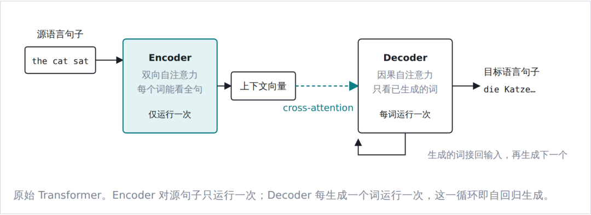
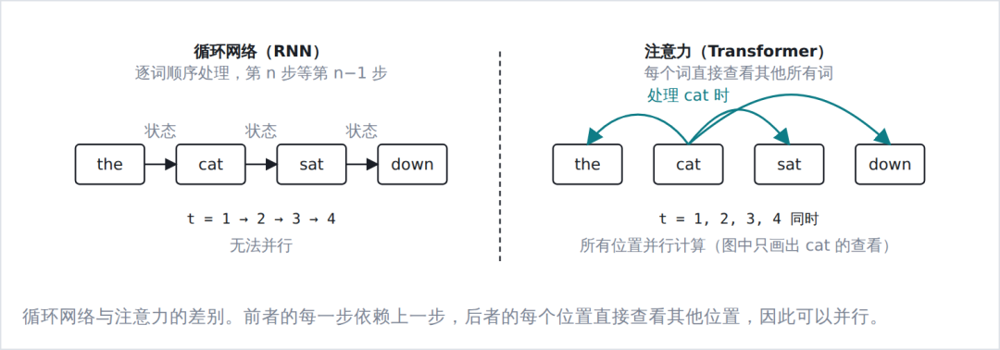
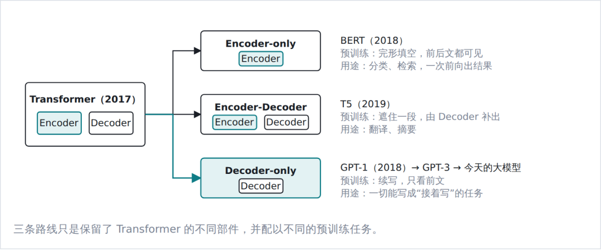
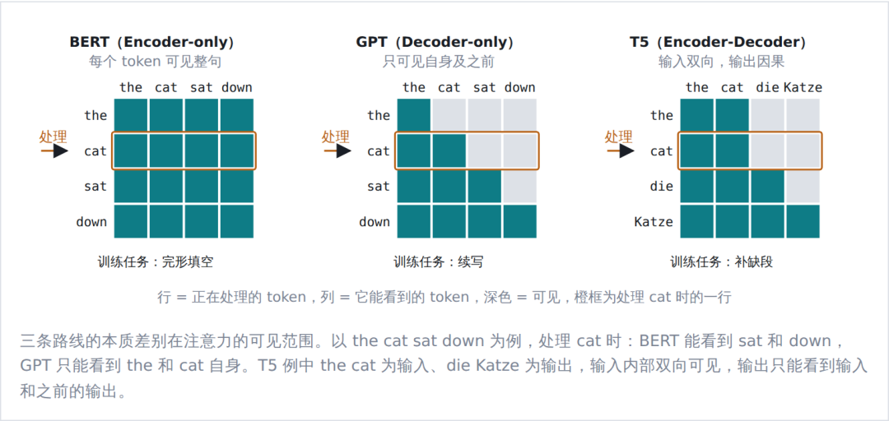
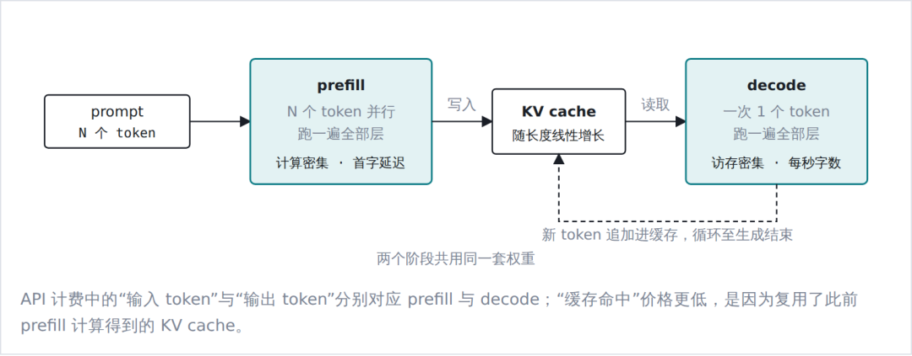
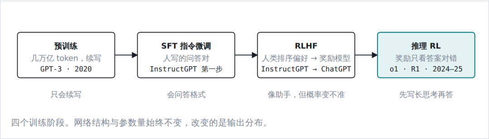
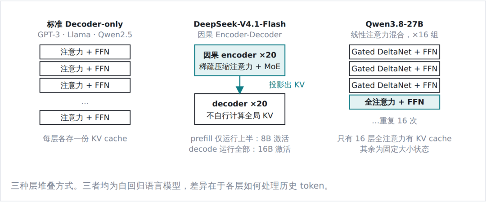
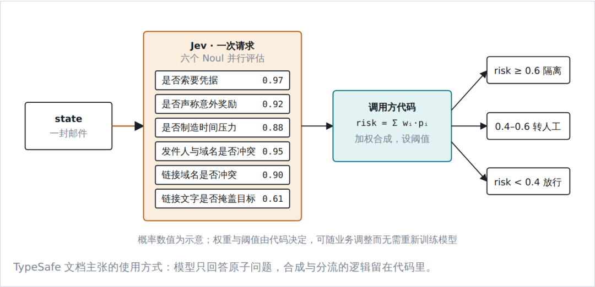
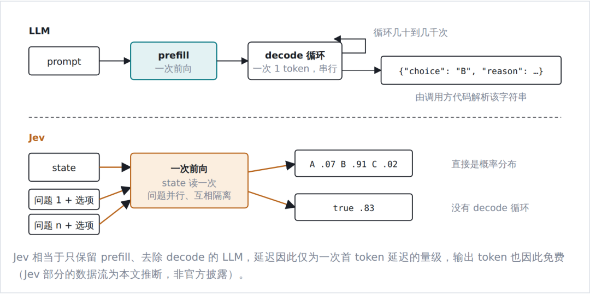
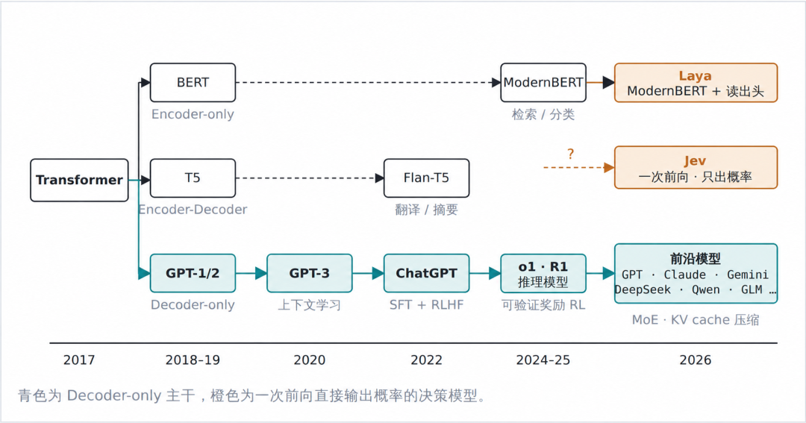

从 BERT、GPT 到 Jev：一文看懂大模型架构的演进与分化
来源：微信公众号 归档日期：2026-10-19 抓取状态：成功 原文字符：9959｜配图：11 张
摘要速览
- 作者：leonjia 2026 年 9 月，TypeSafe AI 发布了 Jev。与常见的语言模型不同，Jev 不生成文本，而是针对给定的输入材料回答三类限定形式的问题：从若干选项中选一个，在若干等级上评分，或判断一个陈述是否成立，并直接返回各个答案的概率。常见语言模型完成一次回答需要数秒到数分钟，Jev 完成一组判断在百毫秒量级。
核心内容
（待补充）
可执行启发
（待补充）
我的想法
（待补充）
原文沉淀
目录
- 01 2017：Transformer 与机器翻译
- 02 2018–2020：三条技术路线的分化
- 03 Decoder-only 成为主流
- 04 2022–2025：后训练与推理模型
- 05 2026：前沿模型与发展主线的关系
- 06 Jev
- 07 一个对照：Laya
- 08 全貌
来源：https://mp.weixin.qq.com/s/AciT5C6ypT35FaGOoEum5Q 平台：weixin｜作者：腾讯技术工程 抓取方式：cdp｜字符数：11902｜图片：13
作者：leonjia
2026 年 9 月，TypeSafe AI 发布了 Jev。与常见的语言模型不同，Jev 不生成文本，而是针对给定的输入材料回答三类限定形式的问题：从若干选项中选一个，在若干等级上评分，或判断一个陈述是否成立，并直接返回各个答案的概率。常见语言模型完成一次回答需要数秒到数分钟，Jev 完成一组判断在百毫秒量级。
要说明 Jev 与主流大模型之间的关系，需要回到 Transformer 架构本身。从 2017 年的原始结构，到 BERT 与 GPT 所代表的两条主流技术路线，再到 DeepSeek、Qwen 等当前的前沿模型，模型读取输入和产生输出的方式经历了几次变化，Jev 的不同之处也正在这两个环节上。文末另以开源的 Laya 作为对照，它与 Jev 输出方式相近而底层网络不同。
01 2017：Transformer 与机器翻译
提出 Transformer 的论文《Attention Is All You Need》针对的任务是机器翻译，因此原始结构是两段式的：Encoder 读取源语言句子，输出一组上下文向量；Decoder 通过 cross-attention 读取这组向量，同时逐词生成目标语言句子。Encoder 对源句子只运行一次，Decoder 每生成一个词运行一次，生成的词接回输入后再生成下一个。

两段式框架本身并不是这篇论文的贡献，RNN 时代的 seq2seq 模型已经采用同样的结构。它的贡献在于用注意力（attention）完全取代了循环结构。循环网络逐词读入，每一步的状态由上一步传来，第 n 个词必须等前 n−1 个词处理完；注意力则在处理每一个词时直接查看句子里的其他词，按相关程度加权汇总它们的信息，所有位置可以同时计算。一层注意力加一层前馈网络构成一个基本单元，堆叠数十层就是一个 Transformer。并行计算让 GPU 得以充分利用，后来模型规模扩展到千亿参数，这是工程上的前提。

Encoder 与 Decoder 的差别也在注意力上：Encoder 读取源句子时每个位置都能看到整句，注意力是双向的；Decoder 生成时每个位置只能看到自身及之前已生成的词，注意力是因果的（下一节的可见范围图会以具体句子展示这一区别）。模型实际处理的单位是分词器切出的 token，中文约对应一个字到一个词，英文约对应一个单词或其一部分。
02 2018–2020：三条技术路线的分化
2018 年前后，研究者发现 Transformer 的两个部件可以拆开单独使用，并且各自适合不同的预训练任务。由此形成三条技术路线。它们在层结构上几乎相同，实质差异只有两点：注意力的可见范围，即读取输入时能否看到后文；以及预训练任务，即训练时做的是填空还是续写。这两点决定了模型适合什么任务。

Encoder-only 路线由 BERT（2018 年 10 月）开创，只保留读的那一半，预训练任务是完形填空：随机遮住句子里的一部分词，让模型依据前后文还原。Encoder-Decoder 路线以 T5（2019 年 10 月）为代表，两半都保留，预训练任务是遮住一段话由 Decoder 补出来，适合翻译、摘要这类输入输出形态固定的任务。Decoder-only 路线由 GPT-1（2018 年 6 月）开创，只保留写的那一半，预训练任务就是续写：给定前文，预测下一个词。这里顺带说明一个容易混淆的名称：Decoder-only 模型中的 Decoder 已经不包含 cross-attention，因为没有 Encoder 可供读取，它在结构上等价于一个施加了因果掩码的 Encoder，沿用 Decoder 之名只是历史原因。

Encoder-only 路线退出了通用能力的竞争，但一次前向、毫秒级延迟的特点使其在检索、推荐、内容审核等高吞吐判别场景中仍被广泛使用，2024 年发布的 ModernBERT 即为例证。这类模型的使用方式是“预训练加微调”：预训练得到的 BERT 本身只会填空，要让它做某个具体判断，需要在输出端接一个分类头，用该任务的标注数据微调整个网络。微调后的模型读取输入一次，直接输出各类别的概率，但它只会这一个任务，类别集合在训练时就已固定，换一个任务就要重新标注、重新微调。
03 Decoder-only 成为主流
推理过程：prefill 与 decode
对 Decoder-only 模型而言，“理解输入”与“生成输出”并不对应两个网络，而是同一个网络、同一套参数在推理时的两个阶段。
第一阶段称为 prefill：整段 prompt 一次性输入网络，所有 token 并行计算，各层的键、值向量存入缓存（KV cache），供后面的 token 查阅。这一阶段计算密集，对应用户感知到的首 token 延迟。
第二阶段称为 decode：网络基于 KV cache 逐 token 生成，每生成一个 token 就将其键、值追加进缓存。这一阶段串行且访存密集，每一步都要读取全部权重与全部缓存，对应用户感知到的生成速度。

“输出读取输入”这件事在 Decoder-only 结构里同样发生，只是不再通过 cross-attention，而是通过普通的自注意力：回答的每个 token 与 prompt 处于同一条序列，直接查看 prompt 各位置的键、值即可。代价是 prompt 内部只能单向可见，但经过数十层堆叠后，prompt 末尾位置已经聚合了前文的信息，实践中这一限制没有成为明显的短板。
成为主流的原因
- 训练信号更密集。续写任务在句子的每一个位置上都能出一道题，每个词都是前文的预测目标；填空任务只能在被遮住的少数位置上出题。同样一批文本，前者提供的训练信号要多得多。
- 任务形态统一。对话、代码补全、思维链推理、工具调用都可以表述为“在同一序列上继续生成”，不需要为每类任务重新定义输入与输出的边界。GPT-3（2020，175B）展示的上下文学习能力，即仅在 prompt 中给出少量示例就能完成新任务，正是这种统一带来的。
- KV cache 可以复用。因果掩码保证已处理 token 的键、值不受后续内容影响，多轮对话与 agent 循环只需追加。双向 Encoder 不具备这一性质，每次新增输入都要重新计算。
Wang 等人 2022 年的系统对比给出了经验上的结论：在只做大规模无监督预训练、不做针对性微调的设定下，Decoder-only 配合续写目标的零样本泛化能力最强；双向可见性配合填空目标的优势要在多任务微调之后才体现。行业的投入方向恰好是前者。
04 2022–2025：后训练与推理模型
ChatGPT 是 OpenAI 在 2022 年 11 月发布的对话产品，最初的底层模型是 GPT-3.5，此后随 GPT-4、GPT-4o、o 系列直到当前的 GPT-5.x 不断更新，OpenAI 自 GPT-4 起不再公开架构细节，但它们都是自回归、逐 token 生成的 Decoder-only 模型。ChatGPT 的对话能力并非来自结构上的变化，而是预训练之后的若干轮后训练。2024 年之后的推理模型，如 OpenAI o1 和 DeepSeek-R1，同样没有改变架构，而是通过强化学习使模型在给出答案之前先生成较长的思考过程。

RLHF 的做法是：由人对模型的多个回答排序，训练一个奖励模型去拟合人的偏好，再以强化学习使模型输出向高奖励方向偏移。这使模型的输出风格贴近标注者的偏好，但也带来两个已被证实的副作用。其一是校准性下降：OpenAI 在 GPT-4 技术报告里给过一组对照，预训练模型给出的置信度与实际正确率基本一致，自称八成把握的题目约有八成答对；经过后训练之后，这种一致性明显变差。其二是过度自信，因为标注者倾向于偏好语气确定的回答。
推理模型的思考过程本身仍是逐 token 的自回归生成，只是不呈现给用户。它提高了模型在数学、代码等可验证任务上的能力，代价是单次回答的延迟从秒级提高到分钟级。
05 2026：前沿模型与发展主线的关系
以 2026 年的两个开源模型为例，9 月发布的 DeepSeek-V4.1-Flash 与 8 月开源的 Qwen3.8-27B，可以看到前沿模型与上述主线的关系。两者仍然是自回归、逐 token 生成的 Transformer，prefill 与 decode 两阶段、后训练流程均原样适用。近几年的架构创新没有改变这一骨架，而是集中在骨架内部的组件上，目标基本一致：在同等能力下降低计算量与显存占用。
变化最集中的是两处。一是前馈网络改为 MoE（混合专家）：将每层的前馈网络拆分为数百个子网络，每个 token 只激活其中少数几个，使总参数量与每 token 的计算量解耦。DeepSeek-V4.1-Flash 总参数 552B、每 token 激活 16B，即属此类；Qwen3.8-27B 则是 27B 全部激活的密集模型。二是KV cache 的压缩：长上下文与 agent 场景下缓存占用超过权重本身，各家路径不同。DeepSeek 采用低维潜向量压缩加稀疏选择，并在 V4.1-Flash 中将前 20 层作为因果 encoder、后 20 层的键值由其投影得到，使 prefill 只需运行一半网络；Qwen 自 Qwen3-Next 起将每 4 层中的 3 层替换为线性注意力（Gated DeltaNet），以固定大小的状态替代逐 token 缓存。

V4.1-Flash 的“encoder-decoder”与第 01 节面向翻译的两段式结构含义不同：它的 encoder 仍为因果掩码，整个模型仍是标准的自回归语言模型，只是 decoder 层不再自行计算全局键值。判断一个模型属于哪条路线，看的不是名称，而是两点：注意力是否为因果掩码，以及结果是否由逐 token 生成得到。DeepSeek 与 Qwen 在这两点上与 GPT-3 完全一致；Jev 在第二点上不同。
06 Jev
为什么要另做一类模型
TypeSafe AI 于 2026 年 9 月 15 日发布 Jev。创始人 Diogo Almeida 是 InstructGPT 论文的作者之一，曾在 OpenAI 负责后训练，发布文章的第一句话是他们的问题所在：“Models have been superhuman at chat for years, so where is all the automation?”他们的解释是，RLHF 训练出来的模型从设计上就是为协助人而准备的：奖励模型拟合人类评分者的偏好，模型学会让回答看起来正确，而不是让概率反映真实的正确率。一个模型如果在 95% 的情况下能完成任务，却无法指出剩下的 5% 在哪里，就不能用于无人值守的自动化。TypeSafe 把自己的方法 RLCD（Reinforcement Learning for Calibrated Decisions）与 RLHF、RLVR 并列为第三种后训练范式：前两者分别优化人类偏好和可验证奖励，RLCD 优化校准的决策，训练出的模型“不生成文本，返回决策与概率”。“System One”一名取自卡尼曼的快慢两种思考，LLM 被归为慢的系统二，Jev 定位为快的系统一。
状态与问题
每次请求提供一段 state（待判断的材料，可以是字符串、JSON 对象或数组），再附上任意数量的问题。问题限定为三种原语：
| 原语 | 问题类型 | 返回 | 示例 |
|---|---|---|---|
| Choice | 从最多 255 个选项中选一个 | 各选项的概率，以及一个置信度 | 这张工单应交给哪个团队 |
| Score | 在 2–10 个有序等级中评级 | 概率加权的分数 | 客户的不满程度 |
| Noul | 判断一个陈述是否成立 | 一个 0–1 的概率 | 这条消息是否紧急 |
文档中的一个例子：对同一条客服消息同时问三个问题，返回的是每个问题上的概率分布，而不是文本。
// 请求
{
"state": "Hi, I've been trying to connect my Stripe account for 3 days
and the integration keeps failing. I'm losing sales. Please help ASAP.",
"questions": {
"department": {
"type": "choice",
"instructions": "Which team should handle this",
"criteria": { "billing": "…", "technical": "…", "sales": "…" }
},
"frustration": {
"type": "score",
"instructions": "How frustrated the customer appears",
"criteria": [ "Calm", "Frustrated but civil", "Very angry" ]
},
"is_urgent": {
"type": "noul",
"instructions": "The message conveys urgency"
}
}
}
// 响应
{
"answers": {
"department": {
"choice": "technical",
"confidence": 0.78,
"probabilities": { "technical": 0.85, "billing": 0.15, "sales": 0.0 }
},
"frustration": {
"score": 1.0,
"probabilities": { "0": 0.0, "1": 1.0, "2": 0.0 }
},
"is_urgent": { "noul": 1.0 }
}
}confidence 由概率分布的形状算出，分布均匀时为 0，完全集中时为 1，文档建议按它分流：高置信度自动执行，低置信度交给人处理。官方指标：多数查询约 100 ms，同一请求内增加问题几乎不增加延迟；每百万输入 token $0.042，输出免费；仅支持文本，英语为主；不开源。
拆分问题
TypeSafe 主张的形态是代码掌握控制流，只在需要常识判断的地方调用模型，而且每个问题都要拆到原子。以垃圾邮件识别为例，不问“这是不是垃圾邮件”，而是对同一封邮件同时问六个 Noul：是否索要凭据、是否声称意外奖励、是否制造时间压力、发件人与域名是否冲突、链接域名是否冲突、链接文字是否掩盖目标。六个问题并行评估，返回六个概率，由代码加权合成风险分数并设阈值。

与语言模型的关系
Jev 很可能以预训练的 Transformer 作为底层网络，它能理解任意自然语言问题的能力就来自这里，这一部分与 LLM 同源。不同的是结果的产生方式。LLM 无论输出普通文本还是 JSON，都要经过 decode 阶段逐 token 生成，再由调用方解析字符串；Jev 在 prefill 之后不进入 decode，而是直接从网络中读出每个问题在各选项上的概率分布。这与给 LLM 加一个强制 schema（JSON mode、structured output 之类）不是一回事：后者只是约束了生成出来的字符串的格式，逐 token 生成的过程一步没少；前者根本没有生成过程。发布文章里把这一区别写作“串行采样”与“并行采样”，所谓“类型安全”也由此而来：输出被限定在给定选项上，不可能出现选项之外的内容。

另一个参照是第 02 节的 BERT 分类器。两者计算形态最接近，都是读取输入一次、直接给出类别概率。区别在任务怎么指定：BERT 分类器的任务在微调时写进参数，类别固定，换一个判断就要重新标注和训练；Jev 的问题与选项是请求的一部分，调用时用自然语言写出。这种通用性来自 LLM 级的底层网络，BERT 只做过填空预训练、规模数亿，读不懂“发件人显示名与邮箱域名是否冲突”这样的指令。代价也对应存在：在标注充足的固定任务上，专门微调的 BERT 往往更准。
对 Jev 的理解
官方没有公开架构，只有“新的模型架构、并行采样器、RLCD 训练方法”几句。但从 API 的行为可以推断它的形态：同一请求里增加问题数量几乎不增加耗时，说明 state 只读取一次、各问题并行处理；255 个选项与 2 个选项耗时相同，说明没有逐 token 解码；选项的位置会影响准确率，符合因果 Transformer 的特征。较可能的实现是：以预训练的因果 Transformer 为底层网络，对 state 做一次 prefill，各问题连同选项作为并行分支同时前向，在每个选项末尾读出分数、对同一问题的选项做 softmax，并用合成数据训练概率的校准度。官方所称的“新架构”，更可能指这套分支、读出头与训练目标的组合，而不是新的注意力机制。
由此可以给 Jev 一个整体的定位。它没有引入新的 Transformer 结构，而是把“向语言模型提选择题、只读概率不让它生成”这种长期以 hack 形式存在的用法做成了产品，并把概率的校准作为训练目标，这两件事恰好是面向对话的 LLM 长期不在意的。官方与独立评测都显示，在拆分好的判断类任务上，它的准确率与中等推理预算的前沿模型相当，成本与延迟低约两个数量级；同时在不熟悉的领域概率会失准，也不能做数值计算和多步推理。它保留了 LLM 的理解能力，去掉了生成，因此不能写、不能思考、不能作为 agent 运行，换来的是百毫秒级的延迟和可以直接用于程序判断的概率。
07 一个对照：Laya
第 06 节把 Jev 拆成两部分：一个 LLM 级的底层网络，和一种一次前向直接读出概率的输出方式。Jev 发布三天后的 9 月 18 日，Convai Innovations 的 Nandakishor M 以 Apache 2.0 开源了 Laya，定位是“33 ms 的开源 System 1 决策引擎”，作者称其思路源于自己 2025 年的研究，社区则普遍称之为开源版的 Jev。它的输出方式与本文对 Jev 的推断相近，底层网络则是一个公开的、小得多的 encoder。
Laya 的结构可以从开源代码直接读出。底层网络是 ModernBERT-large，一个 4 亿参数量级的双向 encoder，即第 02 节 Encoder-only 路线的当代版本；其上接一个小的决策头。每个问题被拼成一条序列：问题类型和指令在前，各个选项在中间，每个选项前放一个 [MASK] 标记，state 接在最后。序列经过 encoder 和决策头后，在每个 [MASK] 位置取出隐向量打一个分，对同一问题的所有选项做 softmax，就得到概率分布。三种原语与 Jev 相同，训练目标同样是概率的校准。它一次最多读入 512 个 token，约一封邮件的长度。发布版本给出的概率整体偏高，即声称的把握高于实际的正确率，作者建议使用者先在自己的数据上做一次校准，再依据这些概率做决策。
![Laya 的做法（据开源代码）：把选项写进输入序列，在每个选项前的 [MASK] 位置读出分数。读出方式与本文对 Jev 的推断相近，底层网络则是一个 4 亿参数的双向 encoder。]()
Laya 的做法（据开源代码）：把选项写进输入序列，在每个选项前的 [MASK] 位置读出分数。读出方式与本文对 Jev 的推断相近，底层网络则是一个 4 亿参数的双向 encoder。
按前文的划分，Laya 是 BERT 分类器往前走了一步：把选项写进输入而不是写进参数，于是不必为每个任务重新训练。这一步正是第 06 节里 Jev 与 BERT 分类器之间的差别，Laya 用一个 4 亿参数的 encoder 走了同一步。就结果的产生方式而言，它与本文对 Jev 的推断相近：一次前向、按选项读出概率、以校准为训练目标。差别在底层网络。Jev 的参数量与结构均未公开，本文依据其零样本表现推断它以 LLM 级的因果 Transformer 为底层；Laya 的底层则是确定的，一个只做过填空预训练、4 亿参数的双向 encoder。
同样的输出方式装在 4 亿参数的 BERT 上，零样本判断的表现远不及 Jev，作者公布的最好成绩也来自针对评测集微调后的版本；而输出方式本身，用开源 encoder 加一个读出头即可实现，Laya 和随后出现的多个类似项目都是例子。两相对照，Jev 与这些开源实现的差距不在读出方式，而在读出方式之下的网络：能在不训练的前提下读懂任意问题，依赖的是 LLM 级的理解能力。对使用者而言，在自己的数据上做固定判断，微调后的 Laya 是可用的开源方案；需要零样本处理任意问题，目前仍要 LLM 级的底层网络。
08 全貌

回到开头的问题。从 Transformer 到今天，主流模型的骨架没有变过：ChatGPT 与推理模型改变的是训练方式，DeepSeek 与 Qwen 改变的是内部组件。Jev 保留了这套骨架的读取部分和 LLM 级的理解能力，去掉了生成部分；Laya 的对照则说明，去掉生成这一步本身并不难，难的仍是底层网络的理解能力。Jev 不是 LLM 的替代，而是同一底层网络在另一类任务上的另一种用法。是否适用，取决于任务本身需要的是自由的文本生成，还是在有限选项之间做出判断。


归属：[[02-输入/按主题/AI与效率/_index|AI与效率]]